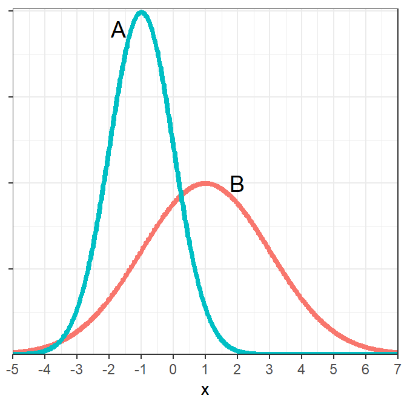
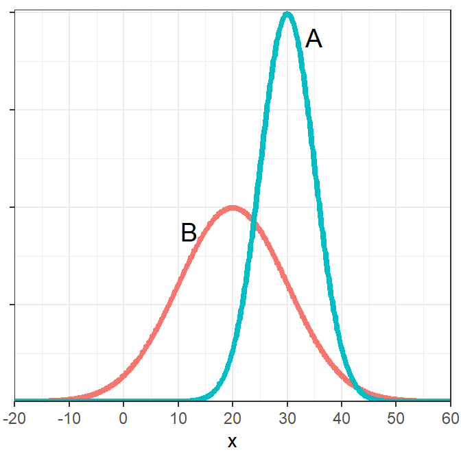

For each situation below, (i) identify μ, (ii) identify σ, and (iii) draw the normal distribution with an approximately accurate scale on the x-axis. 1. Z~N(0,1) 1. Y~N(90,8)
Identify the mean and standard deviation for each population on the graph below (HINT: “eyeball” integers).

Identify the mean and standard deviation for each population on the graph below (HINT: “eyeball” integers).

You can click on each question to see an answer. Click on it again to close the answer.
Answer each question below, without using R, assuming that Z~N(0,1). Show your work with a careful drawing for each question.